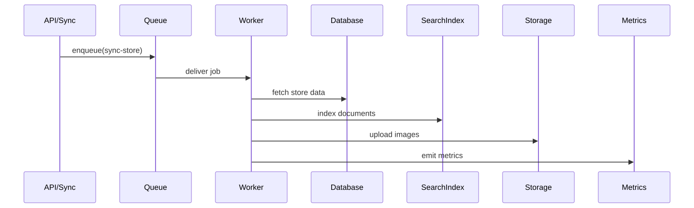

Архітектура
Огляд архітектури системи, відповідальність компонентів та основні потоки даних між API, робітниками, БД та пошуком.
Scope
- High-level system diagram
- Service responsibilities
- Sync, indexing, and API data flow
- Deployment topology
Recommended Topics
Опис компонентів
Короткий опис основних компонентів системи та їх відповідальності.
- API Server: обробляє запити клієнтів, авторизацію та роутинг.
- Queue: черга завдань (BullMQ) для фонової обробки.
- Workers: фонова обробка синхронізації, індексації та агрегацій.
- Database: основне сховище (Postgres + Prisma).
- Search Index: пошуковий індекс для швидких пошукових запитів.
- Cache: Redis для кешування та блокувань.
Діаграми
Нижче — статичні SVG-діаграми, згенеровані з Mermaid для кращого відображення у браузерах.


